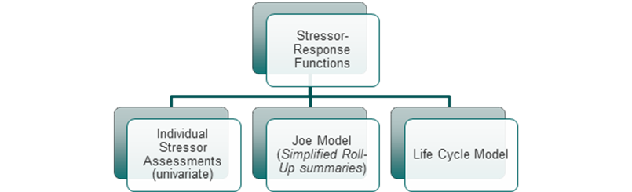
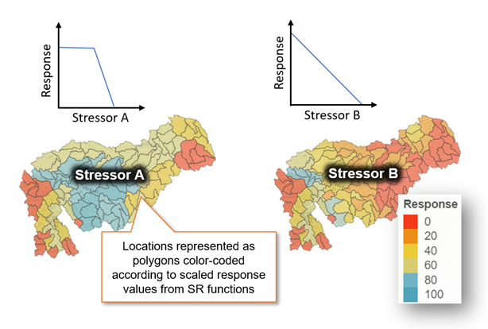
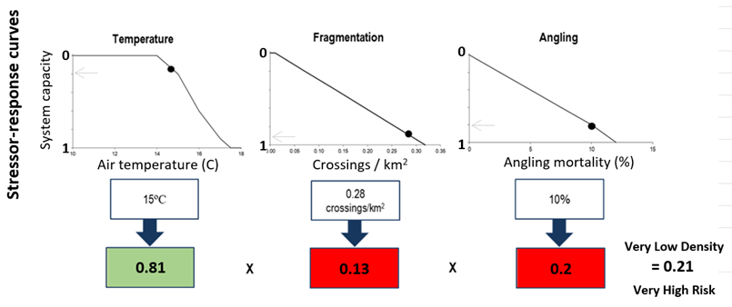
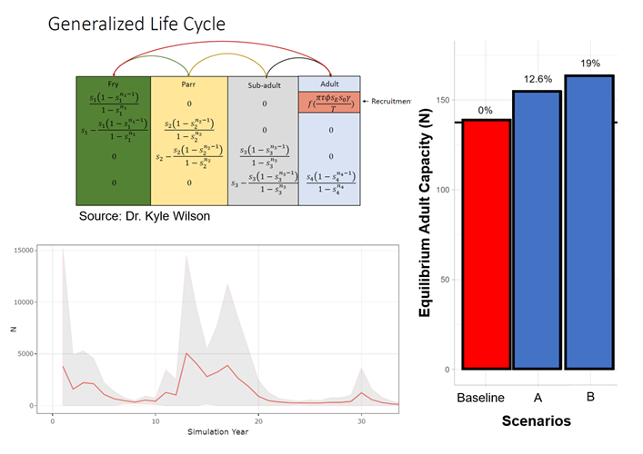

3 Modelling Pathways and Assessment Endpoints
The CEMPRA framework offers several different modelling options and assessment endpoints to choose from (Figure A.2). The specific endpoint to use will depend on the application, data availability, and overall objectives of the assessment. In the following section, we will describe stressor-response functions and the simplified “Joe Model” that combines the effects of multiple stressors on the single adult life stage. We will also discuss the integrated life cycle model, which links stressors to vital rates for multiple life history stages to project productivity and capacity of the target system. Although assessment endpoints differ between the modelling streams, they all rely on stressor-response functions as the central theme of the modelling process.

3.1 Individual Stressor Assessments (univariate)
When setting up a cumulative effects model, it is often essential to visualize the spatial distribution of stressor magnitudes. The CEMPRA visual interface is organized around a centralized map interface (see Section 6), which allows users to flip through stressors individually to produce univariate heatmaps (choropleth maps) of each stressor distribution (see Figure A.3). These summaries are simple yet useful to provide a general overview of the study area, stressors, and associated stressor-response functions. The visual interpretation of univariate stressor summaries is largely qualitative. The intent is to visually identify hotspots and/or determine which stressors are high everywhere or low everywhere based on the input stressor magnitude data for each location and the corresponding predicted habitat capacity.

3.2 Joe Model: Simplified Stressor Roll-up Summaries
The Joe Model component of the CEMPRA tool leverages the library of stressor-response functions, defined and uploaded by the user, to generate a simplified roll-up summary (cumulative effects score) across multiple stressors. These summaries are simply the product of the scaled response values (from 0 to 1, equivalent to 0-100% of the system carrying capacity for adults) of all stressors for each location (Figure A.4). Different stressors can be selected (or omitted) from this summary depending on data availability or to characterize different potential impact pathways.
In the Joe Model, the response component of each stressor-response function (y-axis) is characterized broadly as the ‘Mean System Capacity’ of the target study system. ‘Mean System Capacity’ specifically refers to the adult carrying capacity since the basic Joe model is single-stage and assumes that each stressor-response function is calibrated to the adult system capacity; for example, even though in reality, it is salmonid egg and fry survival that are directly impacted by high Selenium concentrations, the effect of selenium dose will be scaled to the impact on the adult population size in the Selenium stressor-response function. This simplification of stage-structured dynamics into a single life stage is one of the key features of the Joe model that allows application to data-deficient species.
The calculated Mean System Capacity (Figure A.4) is also referred to as a “cumulative effect score”. Although it can logically be considered an estimate of adult carrying capacity as described above, it also represents a scoring procedure for multiple stressors. In the Joe Model summaries, the cumulative effect score across stressors is calculated by multiplying the mean system capacity metrics together (Figure A.4). However, the model also offers the option for users to custom-define the scoring algorithm (e.g., so that it is not multiplicative; see Sandbox section), in which case it may no longer represent carrying capacity. The Joe Model does not require the weighting of individual stressors; since each stressor is scaled to a maximum of 1, they are all weighed equally by default. By doing this, the Joe Model avoids long-standing difficulties associated with weighting impacts ((Walters, 1997)). In effect, the weights of stressors are represented by the response value (0-1) associated with any given stressor magnitude (Figure A.4).

The full implementation of the “Joe Model” extends this basic summary to include stochastic simulations with uncertainty represented in both the raw stressor values for each location and the response function (described further in Section 5). These summaries are useful to represent the risk of cumulative effects or current conditions as a distribution rather than a fixed value.
3.3 Life Cycle Model
An integrated life cycle modelling framework is also included within the CEMPRA tool to evaluate the effects of stressors on population-level productivity and capacity (Figure 3.4). The embedded life cycle modelling framework consists of a stage-structured matrix model that allows users to link stressor-response functions to vital rates for specific life stages (e.g., egg survivorship, fry capacity etc.), unlike the Joe model, where the impact of stressors across multiple life stages are integrated into a single stressor-response function linked to adult capacity. The life cycle model estimates relative changes to population-level productivity and capacity through simulations. A flexible species profile input dataset is available so that users can change values in the species profile to represent different study systems with different life history stages or demographic parameters (e.g., Athabasca Rainbow Trout, Chinook Salmon, etc.). See sections 6.4 and 7 for a detailed summary of the life cycle modelling framework within the CEMPRA tool.

Leave questions and comments below (via your GitHub account)